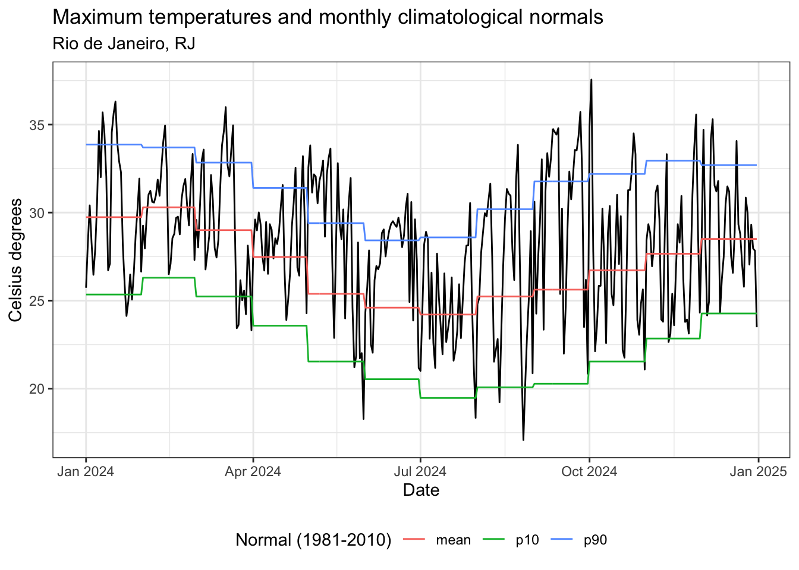
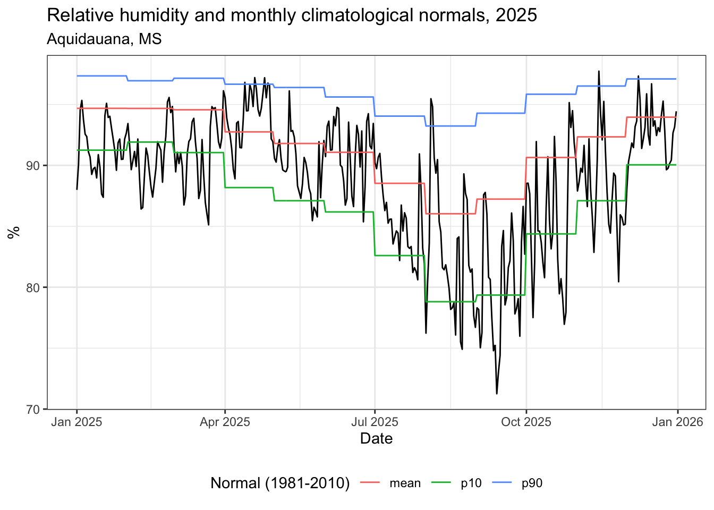

Code
library(dplyr)
library(lubridate)
library(arrow)
library(zendown) # https://rfsaldanha.github.io/zendown/Climate and health research has traditionally represented environmental exposure using nominal meteorological variables, such as mean temperature or total precipitation, included as continuous covariates in epidemiological models. Although these indicators are widely available and straightforward to implement, they often inadequately represent the persistent, extreme, and threshold-exceeding conditions through which climate variability and change affect human health. Many health impacts are driven by discrete climate events - such as heat waves, cold spells, prolonged rainfall, and dry spells - whose effects depend on duration, intensity, and temporal clustering rather than on average conditions alone.
I propose here a method to compute, for each Brazilian municipality, a monthly or weekly set of event-based climate indicators and climatological normals.
In a hurry? Jump to the download section ;-)
A climatological normal can be computed with data from different sources, including remote sensing sensors and “area averages or points in gridded datasets” (WMO 2017). Some gridded climatological datasets are available for the Brazilian territory, including the ERA5-Land from Copernicus (Muñoz-Sabater et al. 2021) and the BR-DWGD dataset (Xavier et al. 2022), offering several climatological indicators for a long time range, and continuously updates.
Some research methods demands that climate data must be aggregated in the same spatial and temporal units of other data to be used in statistical models, being a fairly common procedure in epidemiology and economy studies. In order to approach this issue, spatial gridded data can be aggregated using zonal statistics (Saldanha et al. 2024).
For this dataset, climate zonal statistics from ERA5-Land for the Brazilian municipalities (described here) was used to compute climatological normals and monthly/weekly event indicators.
To compute the event-based indicators and the climatologial normals, an R package named {climindi} was created. The package provides helper functions to compute climatological normals and event-based climate indicators in a tidy way.
The {climindi} package computes the average, 10th and 90th percentile as climatological normals.
Two climatologial normals were computed: 1961-1990 and 1981-2010.
Considering each climatological normal, a set of event-based indicators was computed using the {climindi} package for maximum and minimum temperature, total precipitation, average relative humidity and average wind speed.
For each climate indicator, a set of standard indicators and a set of specific indicators were computed.
count Count of data pointsmean Mean valuemedian Mediansd Standard deviationse Standard errormax Maximum valuemin Minimum valuep10 10th percentilep25 25th percentilep75 75th percentilep90 90th percentilers3 Rain spells: count of rain spells occurrences, with 3 and 5 or more consecutive days with rain above the climatological normal average valuep_1 Count of days with precipitation above 1mmp_5 Count of days with precipitation above 5mmp_10 Count of days with precipitation above 10mmp_50 Count of days with precipitation above 50mmp_100 Count of days with precipitation above 100mmd_3 Count of sequences of 3 days or more without precipitationd_5 Count of sequences of 5 days or more without precipitationd_10 Count of sequences of 10 days or more without precipitationd_15 Count of sequences of 15 days or more without precipitationd_20 Count of sequences of 20 days or more without precipitationd_25 Count of sequences of 25 days or more without precipitationhw3 Count of heat waves occurrences with 3 or more consecutive days with maximum temperature above the climatological normal value plus 5 Celsius degreeshw5 Count of heat waves occurrences with 5 or more consecutive days with maximum temperature above the climatological normal value plus 5 Celsius degreeshot_days Count of hot days, when the maximum temperature is above the normal 90th percentilet_25 Count of days with temperatures above or equal to 25 Celsius degreest_30 Count of days with temperatures above or equal to 30 Celsius degreest_35 Count of days with temperatures above or equal to 35 Celsius degreest_40 Count of days with temperatures above or equal to 40 Celsius degreescw3 Count of cold spells occurrences with 3 or more consecutive days with minimum temperature bellow the climatological normal value minus 5 Celsius degreescw5 Count of cold spells occurrences with 5 or more consecutive days with minimum temperature bellow the climatological normal value minus 5 Celsius degreescold_days Count of cold days, when the minimum temperature is bellow the normal 10th percentilet_0 Count of days with temperatures bellow or equal to 0 Celsius degreest_5 Count of days with temperatures bellow or equal to 5 Celsius degreest_10 Count of days with temperatures bellow or equal to 10 Celsius degreest_15 Count of days with temperatures bellow or equal to 15 Celsius degreest_20 Count of days with temperatures bellow or equal to 20 Celsius degreesds3 Count of dry spells occurrences with 3 or more consecutive days with relative humidity bellow the climatological normal value minus 10 percentds5 Count of dry spells occurrences with 5 or more consecutive days with relative humidity bellow the climatological normal value minus 10 percentws3 Count of wet spells occurrences with 3 or more consecutive days with relative humidity above the climatological normal value plus 10 percentws5 Count of wet spells occurrences with 5 or more consecutive days with relative humidity above the climatological normal value plus 10 percentdry_days Count of dry days, when the relative humidity is bellow the normal 10th percentilewet_days Count of wet days, when the relative humidity is above the normal 90th percentileh_21_30 Count of days with relative humidity between 21% and 30% (Attention level)h_12_20 Count of days with relative humidity between 12% and 20% (Alert level)h_11 Count of days with relative humidity bellow 12% (Emergence level)l_eto_3 Count of sequences of 3 or more consecutive days with wind speed bellow the climatological average normall_eto_5 Count of sequences of 5 or more consecutive days with wind speed bellow the climatological average normalh_eto_3 Count of sequences of 3 or more consecutive days with wind speed above the climatological average normalh_eto_5 Count of sequences of 5 or more consecutive days with wind speed above the climatological average normalb1 Count of days classified as level 1 on Beaufort scaleb2 Count of days classified as level 2 on Beaufort scaleb3 Count of days classified as level 3 on Beaufort scaleb4 Count of days classified as level 4 on Beaufort scaleb5 Count of days classified as level 5 on Beaufort scaleb6 Count of days classified as level 6 on Beaufort scaleb7 Count of days classified as level 7 on Beaufort scaleb8 Count of days classified as level 8 on Beaufort scaleb9 Count of days classified as level 9 on Beaufort scaleb10 Count of days classified as level 10 on Beaufort scaleb11 Count of days classified as level 11 on Beaufort scaleb12 Count of days classified as level 12 on Beaufort scaleThe package functions needs data in specific units. Please certify that your data is in the required unit before running the functions.
The code used to compute this dataset is available here.
The climatological normals and event-based indicators be downloaded from Zenodo on CSV and parquet formats. Click the link bellow to access and download the data.

You can also download the dataset directly from R, using the {zendown} package.
Let’s check some results using the monthly datasets and the 1981-2010 climatological normal.
library(dplyr)
library(lubridate)
library(arrow)
library(zendown) # https://rfsaldanha.github.io/zendown/# 2024 data
tmax_data <- zen_file(15748125, "2m_temperature_max.parquet") |>
open_dataset() |>
filter(name == "2m_temperature_max_mean") |>
filter(code_muni == 3304557) |>
select(-name) |>
mutate(value = round(value - 273.15, digits = 2)) |>
collect()
# normals
tmax_normal <- zen_file(18612340, "tmax_monthly_normal_n1981_2010.parquet") |>
open_dataset() |>
filter(code_muni == 3304557) |>
collect()library(ggplot2)
library(tidyr)
# Prepare data for graph
tmax_normal_exp <- tmax_normal |>
mutate(date = as_date(paste0("2024-", month, "-01"))) |>
group_by(month) %>%
expand(
date = seq.Date(
floor_date(date, unit = "month"),
ceiling_date(date, unit = "month") - days(1),
by = "day"
),
normal_mean,
normal_p10,
normal_p90
) |>
pivot_longer(cols = starts_with("normal_")) |>
mutate(name = substr(name, 8, 100))
# Plot
ggplot() +
geom_line(data = tmax_data, aes(x = date, y = value)) +
geom_line(data = tmax_normal_exp, aes(x = date, y = value, color = name)) +
theme_bw() +
labs(
title = "Maximum temperatures and monthly climatological normals",
subtitle = "Rio de Janeiro, RJ",
color = "Normal (1981-2010)",
x = "Date",
y = "Celsius degrees"
) +
theme(legend.position = "bottom", legend.direction = "horizontal")
# normals
tmax_normal <- zen_file(18612340, "tmax_weekly_normal_n1981_2010.parquet") |>
open_dataset() |>
filter(code_muni == 3304557) |>
collect()
tmax_normal_exp <- tmax_normal |>
filter_out(week == 53) |>
mutate(date = as.Date(paste(2024, week, 1, sep = "-"), "%Y-%U-%u")) |>
group_by(week) %>%
expand(
date = seq.Date(
floor_date(date, unit = "week"),
ceiling_date(date, unit = "week") - days(1),
by = "day"
),
normal_mean,
normal_p10,
normal_p90
) |>
pivot_longer(cols = starts_with("normal_")) |>
mutate(name = substr(name, 8, 100))
# Plot
ggplot() +
geom_line(data = tmax_data, aes(x = date, y = value)) +
geom_line(data = tmax_normal_exp, aes(x = date, y = value, color = name)) +
theme_bw() +
labs(
title = "Maximum temperatures and weekly climatological normals, 2024",
subtitle = "Rio de Janeiro, RJ",
color = "Normal (1981-2010)",
x = "Date",
y = "Celsius degrees"
) +
theme(legend.position = "bottom", legend.direction = "horizontal")
library(gt)
# Load event-based indicators and filter for 2024
zen_file(18612340, "tmax_monthly_indi_n1981_2010.parquet") |>
open_dataset() |>
filter(code_muni == 3304557) |>
filter(year == 2024) |>
select(-code_muni, -year) |>
collect() |>
gt() |>
fmt_number(
columns = where(is.double),
decimals = 2,
use_seps = FALSE
)| month | count | normal_mean | normal_p10 | normal_p90 | mean | median | sd | se | max | min | p10 | p25 | p75 | p90 | hw3 | hw5 | hot_days | t_25 | t_30 | t_35 | t_40 |
|---|---|---|---|---|---|---|---|---|---|---|---|---|---|---|---|---|---|---|---|---|---|
| 1.00 | 31 | 29.74 | 25.35 | 33.87 | 29.84 | 28.73 | 3.69 | 0.66 | 36.31 | 24.13 | 25.73 | 26.62 | 32.60 | 34.64 | 0 | 0 | 7 | 29 | 15 | 3 | 0 |
| 2.00 | 29 | 30.30 | 26.30 | 33.70 | 30.46 | 30.61 | 2.01 | 0.37 | 34.95 | 26.50 | 27.84 | 29.26 | 31.68 | 32.67 | 0 | 0 | 2 | 29 | 17 | 0 | 0 |
| 3.00 | 31 | 29.00 | 25.24 | 32.84 | 29.31 | 28.65 | 3.68 | 0.66 | 35.99 | 23.32 | 24.23 | 26.72 | 32.42 | 33.84 | 0 | 0 | 7 | 27 | 13 | 1 | 0 |
| 4.00 | 30 | 27.48 | 23.58 | 31.40 | 28.50 | 28.95 | 2.22 | 0.41 | 33.21 | 23.90 | 26.29 | 26.79 | 29.58 | 30.79 | 0 | 0 | 3 | 28 | 7 | 0 | 0 |
| 5.00 | 31 | 25.39 | 21.54 | 29.40 | 28.68 | 30.18 | 4.41 | 0.79 | 33.82 | 18.28 | 21.87 | 25.87 | 32.15 | 32.96 | 12 | 9 | 16 | 23 | 16 | 0 | 0 |
| 6.00 | 30 | 24.60 | 20.54 | 28.42 | 27.47 | 28.22 | 2.59 | 0.47 | 31.07 | 21.18 | 23.74 | 26.32 | 29.30 | 29.78 | 0 | 0 | 14 | 24 | 3 | 0 | 0 |
| 7.00 | 31 | 24.21 | 19.47 | 28.59 | 24.68 | 24.34 | 2.89 | 0.52 | 30.55 | 18.34 | 21.29 | 22.62 | 26.86 | 28.20 | 0 | 0 | 2 | 14 | 1 | 0 | 0 |
| 8.00 | 31 | 25.24 | 20.08 | 30.19 | 26.43 | 27.53 | 4.34 | 0.78 | 33.85 | 17.08 | 20.87 | 22.94 | 29.88 | 31.34 | 3 | 0 | 7 | 20 | 7 | 0 | 0 |
| 9.00 | 30 | 25.62 | 20.28 | 31.77 | 30.09 | 31.61 | 4.37 | 0.80 | 35.72 | 20.85 | 23.49 | 26.48 | 33.50 | 34.61 | 16 | 16 | 15 | 24 | 19 | 1 | 0 |
| 10.00 | 31 | 26.73 | 21.54 | 32.20 | 27.53 | 27.08 | 4.33 | 0.78 | 37.56 | 21.09 | 22.19 | 24.32 | 30.69 | 33.32 | 3 | 0 | 5 | 21 | 10 | 1 | 0 |
| 11.00 | 30 | 27.66 | 22.85 | 32.95 | 27.72 | 28.18 | 3.52 | 0.64 | 35.57 | 22.65 | 23.55 | 24.03 | 29.57 | 31.72 | 0 | 0 | 3 | 21 | 7 | 1 | 0 |
| 12.00 | 31 | 28.50 | 24.27 | 32.70 | 29.04 | 28.78 | 3.13 | 0.56 | 35.31 | 23.49 | 24.94 | 27.07 | 31.20 | 34.07 | 0 | 0 | 4 | 27 | 11 | 1 | 0 |
# 2025 data
tmin_data <- zen_file(18257037, "2m_temperature_min.parquet") |>
open_dataset() |>
filter(name == "2m_temperature_min_mean") |>
filter(code_muni == 4218954) |>
select(-name) |>
mutate(value = round(value - 273.15, digits = 2)) |>
collect()
# normals
tmin_normal <- zen_file(18612340, "tmin_monthly_normal_n1981_2010.parquet") |>
open_dataset() |>
filter(code_muni == 4218954) |>
collect()library(ggplot2)
library(tidyr)
# Prepare data for graph
tmin_normal_exp <- tmin_normal |>
mutate(date = as_date(paste0("2025-", month, "-01"))) |>
group_by(month) %>%
expand(
date = seq.Date(
floor_date(date, unit = "month"),
ceiling_date(date, unit = "month") - days(1),
by = "day"
),
normal_mean,
normal_p10,
normal_p90
) |>
pivot_longer(cols = starts_with("normal_")) |>
mutate(name = substr(name, 8, 100))
# Plot
ggplot() +
geom_line(data = tmin_data, aes(x = date, y = value)) +
geom_line(data = tmin_normal_exp, aes(x = date, y = value, color = name)) +
theme_bw() +
labs(
title = "Minimum temperatures and monthly climatological normals, 2025",
subtitle = "Urupema, SC",
color = "Normal (1981-2010)",
x = "Date",
y = "Celsius degrees"
) +
theme(legend.position = "bottom", legend.direction = "horizontal")
library(gt)
# Load event-based indicators and filter for 2024
zen_file(18612340, "tmin_monthly_indi_n1981_2010.parquet") |>
open_dataset() |>
filter(code_muni == 4218954) |>
filter(year == 2025) |>
select(-code_muni, -year) |>
collect() |>
gt() |>
fmt_number(
columns = where(is.double),
decimals = 2,
use_seps = FALSE
)| month | count | normal_mean | normal_p10 | normal_p90 | mean | median | sd | se | max | min | p10 | p25 | p75 | p90 | cw3 | cw5 | cold_days | t_0 | t_5 | t_10 | t_15 | t_20 |
|---|---|---|---|---|---|---|---|---|---|---|---|---|---|---|---|---|---|---|---|---|---|---|
| 1.00 | 31 | 15.14 | 12.28 | 17.54 | 15.33 | 15.66 | 1.88 | 0.34 | 18.32 | 11.61 | 12.63 | 13.97 | 16.89 | 17.43 | 0 | 0 | 2 | 0 | 0 | 0 | 14 | 31 |
| 2.00 | 28 | 15.28 | 12.32 | 17.60 | 17.20 | 17.24 | 1.06 | 0.20 | 19.05 | 14.64 | 15.67 | 16.69 | 17.83 | 18.56 | 0 | 0 | 0 | 0 | 0 | 0 | 1 | 28 |
| 3.00 | 31 | 14.41 | 11.66 | 16.83 | 15.02 | 15.16 | 1.96 | 0.35 | 18.33 | 10.25 | 12.52 | 14.06 | 16.34 | 17.16 | 0 | 0 | 2 | 0 | 0 | 0 | 14 | 31 |
| 4.00 | 30 | 12.00 | 7.94 | 15.42 | 11.80 | 11.94 | 2.54 | 0.46 | 17.04 | 4.81 | 8.87 | 10.38 | 13.31 | 14.50 | 0 | 0 | 2 | 0 | 1 | 5 | 27 | 30 |
| 5.00 | 31 | 8.68 | 3.73 | 13.00 | 9.65 | 10.30 | 2.85 | 0.51 | 13.15 | 1.84 | 6.40 | 8.66 | 11.44 | 12.66 | 0 | 0 | 2 | 0 | 2 | 13 | 31 | 31 |
| 6.00 | 30 | 7.21 | 1.81 | 11.74 | 7.06 | 7.74 | 3.74 | 0.68 | 11.59 | −3.16 | 1.67 | 5.50 | 9.87 | 10.89 | 0 | 0 | 4 | 2 | 7 | 25 | 30 | 30 |
| 7.00 | 31 | 6.56 | 0.90 | 11.22 | 5.17 | 5.52 | 3.35 | 0.60 | 10.39 | −2.30 | 0.03 | 2.83 | 7.95 | 8.77 | 3 | 0 | 4 | 3 | 12 | 30 | 31 | 31 |
| 8.00 | 31 | 7.69 | 2.54 | 12.31 | 7.52 | 7.81 | 3.04 | 0.55 | 12.17 | 0.38 | 3.04 | 5.44 | 9.82 | 11.12 | 0 | 0 | 2 | 0 | 7 | 24 | 31 | 31 |
| 9.00 | 30 | 8.63 | 4.13 | 12.91 | 8.60 | 8.45 | 3.13 | 0.57 | 13.89 | 3.32 | 5.15 | 6.06 | 10.88 | 12.47 | 0 | 0 | 2 | 0 | 3 | 18 | 30 | 30 |
| 10.00 | 31 | 10.75 | 6.74 | 14.51 | 10.38 | 10.20 | 2.65 | 0.48 | 14.60 | 4.17 | 6.60 | 8.74 | 12.73 | 13.30 | 0 | 0 | 4 | 0 | 1 | 14 | 31 | 31 |
| 11.00 | 30 | 12.30 | 8.86 | 15.87 | 11.80 | 12.20 | 2.47 | 0.45 | 18.30 | 7.40 | 9.00 | 9.66 | 13.66 | 14.09 | 0 | 0 | 3 | 0 | 0 | 10 | 29 | 30 |
| 12.00 | 31 | 13.86 | 10.52 | 16.73 | 15.01 | 15.00 | 2.74 | 0.49 | 18.92 | 8.10 | 11.12 | 13.36 | 17.62 | 18.15 | 0 | 0 | 1 | 0 | 0 | 1 | 16 | 31 |
# 2025 data
rh_data <- zen_file(18392587, "rh_mean_mean_2025.parquet") |>
open_dataset() |>
filter(name == "rh_mean_mean") |>
filter(code_muni == 5001102) |>
select(-name) |>
collect()
# normals
rh_normal <- zen_file(18612340, "rh_normal_monthly_n1981_2010.parquet") |>
open_dataset() |>
filter(code_muni == 5001102) |>
collect()library(ggplot2)
library(tidyr)
# Prepare data for graph
rh_normal_exp <- rh_normal |>
mutate(date = as_date(paste0("2025-", month, "-01"))) |>
group_by(month) %>%
expand(
date = seq.Date(
floor_date(date, unit = "month"),
ceiling_date(date, unit = "month") - days(1),
by = "day"
),
normal_mean,
normal_p10,
normal_p90
) |>
pivot_longer(cols = starts_with("normal_")) |>
mutate(name = substr(name, 8, 100))
# Plot
ggplot() +
geom_line(data = rh_data, aes(x = date, y = value)) +
geom_line(data = rh_normal_exp, aes(x = date, y = value, color = name)) +
theme_bw() +
labs(
title = "Relative humidity and monthly climatological normals, 2025",
subtitle = "Aquidauana, MS",
color = "Normal (1981-2010)",
x = "Date",
y = "%"
) +
theme(legend.position = "bottom", legend.direction = "horizontal")
library(gt)
# Load event-based indicators and filter for 2024
zen_file(18612340, "rh_indi_monthly_n1981_2010.parquet") |>
open_dataset() |>
filter(code_muni == 5001102) |>
filter(year == 2025) |>
select(-code_muni, -year) |>
collect() |>
gt() |>
fmt_number(
columns = where(is.double),
decimals = 2,
use_seps = FALSE
)| month | count | normal_mean | normal_p10 | normal_p90 | mean | median | sd | se | max | min | p10 | p25 | p75 | p90 | ds3 | ds5 | ws3 | ws5 | dry_days | wet_days | h_21_30 | h_12_20 | h_11 |
|---|---|---|---|---|---|---|---|---|---|---|---|---|---|---|---|---|---|---|---|---|---|---|---|
| 1.00 | 31 | 94.68 | 91.25 | 97.34 | 91.45 | 91.21 | 2.17 | 0.39 | 95.33 | 87.38 | 88.97 | 89.84 | 92.85 | 94.07 | 0 | 0 | 31 | 31 | 16 | 0 | 0 | 0 | 0 |
| 2.00 | 28 | 94.67 | 91.91 | 96.94 | 90.79 | 90.98 | 2.45 | 0.46 | 95.57 | 86.42 | 87.98 | 89.07 | 92.00 | 94.48 | 0 | 0 | 28 | 28 | 20 | 0 | 0 | 0 | 0 |
| 3.00 | 31 | 94.56 | 91.05 | 97.15 | 90.96 | 91.42 | 2.82 | 0.51 | 96.12 | 85.12 | 86.95 | 89.34 | 92.72 | 94.63 | 0 | 0 | 31 | 31 | 13 | 0 | 0 | 0 | 0 |
| 4.00 | 30 | 92.75 | 88.18 | 96.66 | 94.16 | 94.48 | 2.23 | 0.41 | 97.20 | 88.90 | 91.43 | 92.64 | 96.09 | 96.76 | 0 | 0 | 30 | 30 | 0 | 4 | 0 | 0 | 0 |
| 5.00 | 31 | 91.80 | 87.10 | 96.39 | 89.74 | 89.85 | 2.40 | 0.43 | 96.11 | 85.46 | 86.56 | 87.96 | 91.22 | 92.33 | 0 | 0 | 31 | 31 | 4 | 0 | 0 | 0 | 0 |
| 6.00 | 30 | 91.07 | 86.18 | 95.61 | 91.15 | 91.31 | 2.67 | 0.49 | 94.76 | 85.37 | 87.23 | 89.86 | 93.40 | 94.03 | 0 | 0 | 30 | 30 | 1 | 0 | 0 | 0 | 0 |
| 7.00 | 31 | 88.53 | 82.60 | 94.04 | 85.44 | 85.26 | 3.06 | 0.55 | 90.98 | 80.61 | 81.60 | 83.28 | 87.24 | 90.24 | 0 | 0 | 31 | 31 | 6 | 0 | 0 | 0 | 0 |
| 8.00 | 31 | 86.03 | 78.81 | 93.23 | 82.89 | 81.60 | 5.53 | 0.99 | 95.47 | 74.91 | 76.23 | 78.52 | 86.29 | 90.47 | 0 | 0 | 31 | 31 | 9 | 2 | 0 | 0 | 0 |
| 9.00 | 30 | 87.23 | 79.36 | 94.28 | 80.01 | 79.12 | 4.54 | 0.83 | 87.78 | 71.26 | 74.75 | 76.57 | 83.64 | 86.14 | 5 | 5 | 30 | 30 | 16 | 0 | 0 | 0 | 0 |
| 10.00 | 31 | 90.65 | 84.38 | 95.84 | 85.64 | 84.62 | 5.23 | 0.94 | 95.15 | 76.96 | 79.13 | 82.03 | 89.62 | 92.37 | 3 | 0 | 31 | 31 | 13 | 0 | 0 | 0 | 0 |
| 11.00 | 30 | 92.34 | 87.10 | 96.51 | 88.29 | 87.95 | 3.74 | 0.68 | 97.73 | 80.45 | 84.79 | 85.75 | 90.22 | 92.39 | 0 | 0 | 30 | 30 | 12 | 1 | 0 | 0 | 0 |
| 12.00 | 31 | 93.95 | 90.05 | 97.09 | 92.69 | 92.77 | 2.12 | 0.38 | 97.33 | 88.03 | 90.16 | 91.42 | 93.66 | 95.40 | 0 | 0 | 31 | 31 | 3 | 1 | 0 | 0 | 0 |
# 2025 data
prec_data <- zen_file(18257037, "total_precipitation_sum.parquet") |>
open_dataset() |>
filter(name == "total_precipitation_sum_mean") |>
filter(code_muni == 1600204) |>
mutate(value = round(value * 1000, digits = 2)) |>
select(-name) |>
collect()
# normals
prec_normal <- zen_file(18612340, "prec_monthly_normal_n1981_2010.parquet") |>
open_dataset() |>
filter(code_muni == 1600204) |>
collect()library(ggplot2)
library(tidyr)
# Prepare data for graph
prec_normal_exp <- prec_normal |>
mutate(date = as_date(paste0("2025-", month, "-01"))) |>
group_by(month) %>%
expand(
date = seq.Date(
floor_date(date, unit = "month"),
ceiling_date(date, unit = "month") - days(1),
by = "day"
),
normal_mean,
normal_p10,
normal_p90
) |>
pivot_longer(cols = starts_with("normal_")) |>
mutate(name = substr(name, 8, 100))
# Plot
ggplot() +
geom_line(data = prec_data, aes(x = date, y = value)) +
geom_line(data = prec_normal_exp, aes(x = date, y = value, color = name)) +
theme_bw() +
labs(
title = "Precipitation and monthly climatological normals, 2025",
subtitle = "Calçoene, AP",
color = "Normal (1981-2010)",
x = "Date",
y = "mm"
) +
theme(legend.position = "bottom", legend.direction = "horizontal")
library(gt)
# Load event-based indicators and filter for 2024
zen_file(18612340, "prec_monthly_indi_n1981_2010.parquet") |>
open_dataset() |>
filter(code_muni == 5001102) |>
filter(year == 2025) |>
select(-code_muni, -year) |>
collect() |>
gt() |>
fmt_number(
columns = where(is.double),
decimals = 2,
use_seps = FALSE
)| month | count | normal_mean | normal_p10 | normal_p90 | mean | median | sd | se | max | min | p10 | p25 | p75 | p90 | rs3 | rs5 | p_1 | p_5 | p_10 | p_50 | p_100 | d_3 | d_5 | d_10 | d_15 | d_20 | d_25 |
|---|---|---|---|---|---|---|---|---|---|---|---|---|---|---|---|---|---|---|---|---|---|---|---|---|---|---|---|
| 1.00 | 30 | 8.68 | 0.47 | 19.71 | 3.15 | 1.77 | 3.63 | 0.66 | 14.70 | 0.13 | 0.34 | 0.79 | 4.00 | 7.55 | 0 | 0 | 21 | 7 | 2 | 0 | 0 | 0 | 0 | 0 | 0 | 0 | 0 |
| 2.00 | 27 | 6.64 | 0.43 | 15.06 | 3.17 | 2.28 | 3.97 | 0.76 | 19.15 | 0.07 | 0.29 | 0.75 | 3.85 | 6.93 | 3 | 0 | 19 | 5 | 1 | 0 | 0 | 0 | 0 | 0 | 0 | 0 | 0 |
| 3.00 | 30 | 5.71 | 0.25 | 13.44 | 2.10 | 1.17 | 2.58 | 0.47 | 11.25 | 0.02 | 0.07 | 0.37 | 3.06 | 4.48 | 0 | 0 | 17 | 2 | 1 | 0 | 0 | 0 | 0 | 0 | 0 | 0 | 0 |
| 4.00 | 29 | 3.19 | 0.00 | 10.02 | 5.30 | 2.90 | 5.95 | 1.10 | 18.28 | 0.06 | 0.22 | 0.60 | 8.44 | 15.37 | 5 | 5 | 19 | 11 | 7 | 0 | 0 | 0 | 0 | 0 | 0 | 0 | 0 |
| 5.00 | 30 | 2.85 | 0.00 | 9.89 | 1.55 | 0.00 | 5.93 | 1.08 | 29.97 | 0.00 | 0.00 | 0.00 | 0.15 | 0.53 | 0 | 0 | 2 | 2 | 2 | 0 | 0 | 3 | 1 | 0 | 0 | 0 | 0 |
| 6.00 | 29 | 1.53 | 0.00 | 3.84 | 1.04 | 0.04 | 3.12 | 0.58 | 13.98 | 0.00 | 0.00 | 0.00 | 0.56 | 0.96 | 0 | 0 | 3 | 2 | 2 | 0 | 0 | 2 | 0 | 0 | 0 | 0 | 0 |
| 7.00 | 30 | 1.02 | 0.00 | 1.98 | 0.10 | 0.00 | 0.51 | 0.09 | 2.80 | 0.00 | 0.00 | 0.00 | 0.00 | 0.00 | 0 | 0 | 1 | 0 | 0 | 0 | 0 | 1 | 1 | 1 | 1 | 1 | 1 |
| 8.00 | 30 | 1.19 | 0.00 | 2.20 | 0.92 | 0.00 | 4.56 | 0.83 | 25.04 | 0.00 | 0.00 | 0.00 | 0.01 | 0.47 | 0 | 0 | 2 | 1 | 1 | 0 | 0 | 2 | 1 | 1 | 0 | 0 | 0 |
| 9.00 | 29 | 2.81 | 0.00 | 9.09 | 0.27 | 0.00 | 0.75 | 0.14 | 3.29 | 0.00 | 0.00 | 0.00 | 0.03 | 0.76 | 0 | 0 | 3 | 0 | 0 | 0 | 0 | 4 | 1 | 0 | 0 | 0 | 0 |
| 10.00 | 30 | 4.73 | 0.00 | 14.63 | 2.15 | 0.31 | 3.98 | 0.73 | 18.32 | 0.00 | 0.01 | 0.03 | 2.08 | 7.41 | 0 | 0 | 10 | 5 | 1 | 0 | 0 | 0 | 0 | 0 | 0 | 0 | 0 |
| 11.00 | 29 | 6.01 | 0.02 | 16.21 | 4.04 | 0.14 | 9.36 | 1.74 | 39.31 | 0.00 | 0.00 | 0.01 | 2.06 | 14.92 | 0 | 0 | 10 | 4 | 4 | 0 | 0 | 1 | 0 | 0 | 0 | 0 | 0 |
| 12.00 | 30 | 7.76 | 0.23 | 17.82 | 7.08 | 2.46 | 11.00 | 2.01 | 41.39 | 0.16 | 0.41 | 0.93 | 5.87 | 29.58 | 4 | 0 | 22 | 11 | 5 | 0 | 0 | 0 | 0 | 0 | 0 | 0 | 0 |
# 2025 data
ws_data <- zen_file(18390794, "wind_speed_mean_mean_2025.parquet") |>
open_dataset() |>
filter(name == "wind_speed_mean_mean") |>
filter(code_muni == 1600204) |>
select(-name) |>
collect()
# normals
ws_normal <- zen_file(18612340, "ws_monthly_normal_n1981_2010.parquet") |>
open_dataset() |>
filter(code_muni == 1600204) |>
collect()library(ggplot2)
library(tidyr)
# Prepare data for graph
ws_normal_exp <- ws_normal |>
mutate(date = as_date(paste0("2025-", month, "-01"))) |>
group_by(month) %>%
expand(
date = seq.Date(
floor_date(date, unit = "month"),
ceiling_date(date, unit = "month") - days(1),
by = "day"
),
normal_mean,
normal_p10,
normal_p90
) |>
pivot_longer(cols = starts_with("normal_")) |>
mutate(name = substr(name, 8, 100))
# Plot
ggplot() +
geom_line(data = ws_data, aes(x = date, y = value)) +
geom_line(data = ws_normal_exp, aes(x = date, y = value, color = name)) +
theme_bw() +
labs(
title = "Wind speed and monthly climatological normals, 2025",
subtitle = "Caetité, BA",
color = "Normal (1981-2010)",
x = "Date",
y = "m/s"
) +
theme(legend.position = "bottom", legend.direction = "horizontal")
library(gt)
# Load event-based indicators and filter for 2024
zen_file(18612340, "ws_monthly_indi_n1981_2010.parquet") |>
open_dataset() |>
filter(code_muni == 5001102) |>
filter(year == 2025) |>
select(-code_muni, -year) |>
collect() |>
gt() |>
fmt_number(
columns = where(is.double),
decimals = 2,
use_seps = FALSE
)| month | count | normal_mean | normal_p10 | normal_p90 | mean | median | sd | se | max | min | p10 | p25 | p75 | p90 | l_u2_3 | l_u2_5 | h_u2_3 | h_u2_5 | b0 | b1 | b2 | b3 | b4 | b5 | b6 | b7 | b8 | b9 | b10 | b11 | b12 |
|---|---|---|---|---|---|---|---|---|---|---|---|---|---|---|---|---|---|---|---|---|---|---|---|---|---|---|---|---|---|---|---|
| 1.00 | 31 | 5.15 | 2.29 | 8.50 | 4.59 | 4.11 | 2.08 | 0.37 | 9.96 | 1.26 | 2.36 | 2.87 | 6.12 | 6.65 | 16 | 5 | 8 | 5 | 0.00 | 1.00 | 10.00 | 7.00 | 11.00 | 2.00 | 0.00 | 0.00 | 0.00 | 0.00 | 0.00 | 0.00 | 0.00 |
| 2.00 | 28 | 4.64 | 1.91 | 7.87 | 5.65 | 5.76 | 2.34 | 0.44 | 10.43 | 1.35 | 1.69 | 4.49 | 7.14 | 8.42 | 7 | 7 | 20 | 20 | 0.00 | 3.00 | 1.00 | 5.00 | 12.00 | 5.00 | 0.00 | 0.00 | 0.00 | 0.00 | 0.00 | 0.00 | 0.00 |
| 3.00 | 31 | 4.11 | 1.67 | 6.86 | 4.10 | 4.33 | 1.50 | 0.27 | 6.23 | 0.95 | 1.81 | 3.41 | 5.12 | 6.09 | 3 | 0 | 13 | 13 | 0.00 | 2.00 | 5.00 | 16.00 | 6.00 | 0.00 | 0.00 | 0.00 | 0.00 | 0.00 | 0.00 | 0.00 | 0.00 |
| 4.00 | 30 | 5.14 | 2.29 | 8.07 | 4.24 | 4.20 | 2.12 | 0.39 | 10.54 | 0.82 | 1.85 | 2.76 | 5.12 | 6.84 | 22 | 21 | 5 | 5 | 0.00 | 3.00 | 7.00 | 13.00 | 5.00 | 1.00 | 0.00 | 0.00 | 0.00 | 0.00 | 0.00 | 0.00 | 0.00 |
| 5.00 | 31 | 6.02 | 2.86 | 9.12 | 6.67 | 6.35 | 1.93 | 0.35 | 11.60 | 4.28 | 4.57 | 5.02 | 7.98 | 9.07 | 10 | 6 | 15 | 12 | 0.00 | 0.00 | 0.00 | 11.00 | 11.00 | 7.00 | 1.00 | 0.00 | 0.00 | 0.00 | 0.00 | 0.00 | 0.00 |
| 6.00 | 30 | 6.53 | 3.30 | 9.75 | 6.13 | 6.37 | 2.94 | 0.54 | 12.50 | 1.29 | 2.64 | 3.48 | 8.31 | 9.40 | 10 | 0 | 7 | 0 | 0.00 | 2.00 | 5.00 | 3.00 | 11.00 | 7.00 | 1.00 | 0.00 | 0.00 | 0.00 | 0.00 | 0.00 | 0.00 |
| 7.00 | 31 | 7.32 | 3.62 | 10.92 | 6.84 | 6.49 | 1.88 | 0.34 | 11.19 | 4.22 | 4.91 | 5.38 | 8.18 | 9.30 | 18 | 18 | 8 | 0 | 0.00 | 0.00 | 0.00 | 8.00 | 12.00 | 7.00 | 2.00 | 0.00 | 0.00 | 0.00 | 0.00 | 0.00 | 0.00 |
| 8.00 | 31 | 6.86 | 3.03 | 10.67 | 7.84 | 7.18 | 2.96 | 0.53 | 13.25 | 2.86 | 3.59 | 6.06 | 10.09 | 11.41 | 7 | 0 | 14 | 7 | 0.00 | 0.00 | 2.00 | 3.00 | 11.00 | 7.00 | 6.00 | 0.00 | 0.00 | 0.00 | 0.00 | 0.00 | 0.00 |
| 9.00 | 30 | 6.96 | 3.23 | 10.65 | 7.06 | 6.89 | 3.36 | 0.61 | 17.21 | 2.30 | 3.39 | 4.58 | 9.03 | 10.46 | 10 | 10 | 11 | 11 | 0.00 | 0.00 | 3.00 | 9.00 | 7.00 | 8.00 | 2.00 | 0.00 | 1.00 | 0.00 | 0.00 | 0.00 | 0.00 |
| 10.00 | 31 | 5.77 | 2.19 | 9.64 | 7.90 | 8.30 | 3.30 | 0.59 | 13.65 | 1.29 | 3.01 | 6.04 | 10.07 | 11.99 | 3 | 0 | 22 | 16 | 0.00 | 1.00 | 4.00 | 1.00 | 7.00 | 10.00 | 6.00 | 0.00 | 0.00 | 0.00 | 0.00 | 0.00 | 0.00 |
| 11.00 | 30 | 5.38 | 1.95 | 9.27 | 5.15 | 5.34 | 2.19 | 0.40 | 11.79 | 1.20 | 2.66 | 3.38 | 6.38 | 7.27 | 9 | 5 | 6 | 6 | 0.00 | 1.00 | 7.00 | 8.00 | 11.00 | 1.00 | 1.00 | 0.00 | 0.00 | 0.00 | 0.00 | 0.00 | 0.00 |
| 12.00 | 31 | 5.32 | 2.10 | 8.82 | 6.17 | 6.48 | 2.77 | 0.50 | 11.82 | 0.98 | 2.86 | 3.91 | 7.75 | 9.74 | 13 | 5 | 17 | 17 | 0.00 | 1.00 | 3.00 | 7.00 | 11.00 | 5.00 | 2.00 | 0.00 | 0.00 | 0.00 | 0.00 | 0.00 | 0.00 |
sessioninfo::session_info()─ Session info ───────────────────────────────────────────────────────────────
setting value
version R version 4.5.2 (2025-10-31)
os macOS Tahoe 26.2
system aarch64, darwin20
ui X11
language (EN)
collate en_US.UTF-8
ctype en_US.UTF-8
tz America/Sao_Paulo
date 2026-02-12
pandoc 3.6.3 @ /Applications/Positron.app/Contents/Resources/app/quarto/bin/tools/aarch64/ (via rmarkdown)
quarto 1.8.27 @ /Applications/Positron.app/Contents/Resources/app/quarto/bin/quarto
─ Packages ───────────────────────────────────────────────────────────────────
package * version date (UTC) lib source
arrow * 22.0.0.1 2025-12-23 [1] CRAN (R 4.5.2)
assertthat 0.2.1 2019-03-21 [1] CRAN (R 4.5.0)
backports 1.5.0 2024-05-23 [1] CRAN (R 4.5.0)
bit 4.6.0 2025-03-06 [1] CRAN (R 4.5.0)
bit64 4.6.0-1 2025-01-16 [1] CRAN (R 4.5.0)
checkmate 2.3.4 2026-02-03 [1] CRAN (R 4.5.2)
cli 3.6.5 2025-04-23 [1] CRAN (R 4.5.0)
digest 0.6.39 2025-11-19 [1] CRAN (R 4.5.2)
dplyr * 1.2.0 2026-02-03 [1] CRAN (R 4.5.2)
evaluate 1.0.5 2025-08-27 [1] CRAN (R 4.5.0)
farver 2.1.2 2024-05-13 [1] CRAN (R 4.5.0)
fastmap 1.2.0 2024-05-15 [1] CRAN (R 4.5.0)
fs 1.6.6 2025-04-12 [1] CRAN (R 4.5.0)
generics 0.1.4 2025-05-09 [1] CRAN (R 4.5.0)
ggplot2 * 4.0.2 2026-02-03 [1] CRAN (R 4.5.2)
glue 1.8.0 2024-09-30 [1] CRAN (R 4.5.0)
gt * 1.3.0 2026-01-22 [1] CRAN (R 4.5.2)
gtable 0.3.6 2024-10-25 [1] CRAN (R 4.5.0)
htmltools 0.5.9 2025-12-04 [1] CRAN (R 4.5.2)
htmlwidgets 1.6.4 2023-12-06 [1] CRAN (R 4.5.0)
jsonlite 2.0.0 2025-03-27 [1] CRAN (R 4.5.0)
knitr 1.51 2025-12-20 [1] CRAN (R 4.5.2)
labeling 0.4.3 2023-08-29 [1] CRAN (R 4.5.0)
lifecycle 1.0.5 2026-01-08 [1] CRAN (R 4.5.2)
lubridate * 1.9.5 2026-02-04 [1] CRAN (R 4.5.2)
magrittr 2.0.4 2025-09-12 [1] CRAN (R 4.5.0)
otel 0.2.0 2025-08-29 [1] CRAN (R 4.5.0)
pillar 1.11.1 2025-09-17 [1] CRAN (R 4.5.0)
pkgconfig 2.0.3 2019-09-22 [1] CRAN (R 4.5.0)
purrr 1.2.1 2026-01-09 [1] CRAN (R 4.5.2)
R6 2.6.1 2025-02-15 [1] CRAN (R 4.5.0)
RColorBrewer 1.1-3 2022-04-03 [1] CRAN (R 4.5.0)
rlang 1.1.7 2026-01-09 [1] CRAN (R 4.5.2)
rmarkdown 2.30 2025-09-28 [1] CRAN (R 4.5.0)
S7 0.2.1 2025-11-14 [1] CRAN (R 4.5.2)
sass 0.4.10 2025-04-11 [1] CRAN (R 4.5.0)
scales 1.4.0 2025-04-24 [1] CRAN (R 4.5.0)
sessioninfo 1.2.3 2025-02-05 [1] CRAN (R 4.5.0)
tibble 3.3.1 2026-01-11 [1] CRAN (R 4.5.2)
tidyr * 1.3.2 2025-12-19 [1] CRAN (R 4.5.2)
tidyselect 1.2.1 2024-03-11 [1] CRAN (R 4.5.0)
timechange 0.4.0 2026-01-29 [1] CRAN (R 4.5.2)
vctrs 0.7.1 2026-01-23 [1] CRAN (R 4.5.2)
withr 3.0.2 2024-10-28 [1] CRAN (R 4.5.0)
xfun 0.56 2026-01-18 [1] CRAN (R 4.5.2)
xml2 1.5.2 2026-01-17 [1] CRAN (R 4.5.2)
yaml 2.3.12 2025-12-10 [1] CRAN (R 4.5.2)
zendown * 0.1.0 2024-05-21 [1] CRAN (R 4.5.0)
[1] /Library/Frameworks/R.framework/Versions/4.5-arm64/Resources/library
* ── Packages attached to the search path.
──────────────────────────────────────────────────────────────────────────────